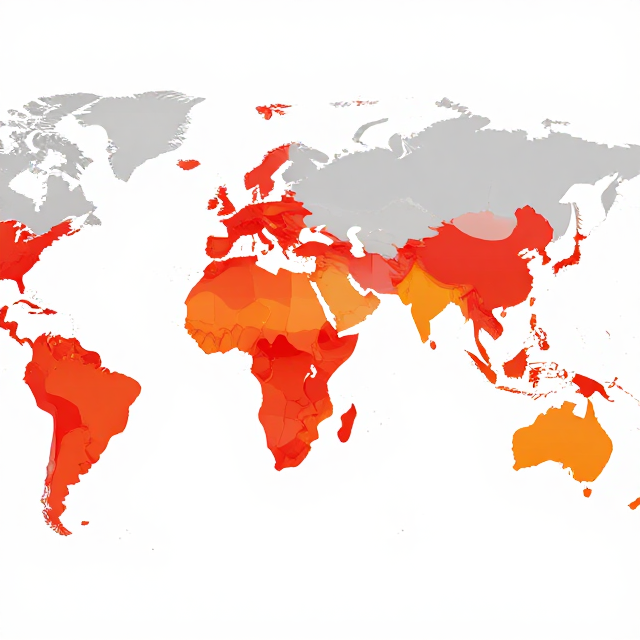

氣候變遷，離我們多近？
從數據、地圖、情緒、行動四個角度探索
4.1-III｜國小中高年級（9–12 歲）
起點
你有沒有遇過這些？
🌡️
熱到不想上學
🌀
颱風停課
🌊
家裡或路上淹水
🥵
午後突如其來的大雷雨
這些不是運氣不好——這是氣候變遷正在影響我們。
活動一
氣候變遷正在發生
離我們多近？
活動一・步驟 2
2024 年：史上最熱的一年
1880–2024 全球均溫曲線
趨勢圖
2024 年：較工業革命前高 +1.47°C / 最熱 10 年全部集中
為什麼近十年這麼熱？（燃燒煤炭、石油、天然氣 → 溫室氣體增加）
資料來源：美國太空總署 — 氣候關鍵指標・全球溫度
活動一・步驟 3
臺灣：升溫約為全球 2 倍
全球／臺灣升溫對照圖
先看差多少，再討論為什麼
1910-2020 年間，臺灣平均氣溫升高約 1.6°C，約為全球平均升溫速度 2 倍。
先比較兩根柱子，再問：學校哪個地方最能感覺到「臺灣升溫更快」？
資料來源：臺灣氣候變遷推估資訊與調適知識平台
活動二
我們、學校、社區會怎麼被影響？
四個面向的衝擊
活動二・步驟 1
健康衝擊：兩組關鍵數字
25 萬
人/年額外死亡
2030–2050 年預估
（世界衛生組織）
2030–2050 年預估
（世界衛生組織）
+70%
65 歲以上長輩
高溫死亡人數增幅
過去 20 年（世界衛生組織）
高溫死亡人數增幅
過去 20 年（世界衛生組織）
夏天記得提醒家中長輩多喝水、別在最熱時間外出。
資料來源：世界衛生組織 — 氣候變遷與健康
活動二・步驟 2
氣候變遷的四格影響
身體會怎樣？
- 操場太熱，跑步頭暈
- 蚊子變多，登革熱風險升高
- 空氣不好時容易咳嗽
心情會怎樣？
- 看到颱風新聞會擔心
- 停課或淹水後覺得害怕
- 覺得未來很熱、有點無力
花費或收入呢？
- 冷氣開更久，電費變高
- 菜園受災，蔬菜變貴
- 颱風淹水要修東西
家人同學社區呢？
- 停課時家人要安排照顧
- 災後社區一起清理很辛苦
- 大家對用電、開冷氣有不同想法
小組四格合計至少寫 4 個例子；程度較好的組別再挑戰每格 2 個。
活動二・步驟 3 ・學習單（投影版）
未來學校地圖：2030 年夏天
熱點＝容易變熱、淹水、危險或不舒服的地方；行動點＝可以改善的地方。
活動三
全球視野與公平
誰最脆弱？
活動三・步驟 1
全球約 36 億人生活在高度脆弱地區
全球高脆弱地區地圖
世界尺度分布圖

脆弱不只看災害大小，也和收入、健康、居住位置、基礎設施與可取得的資源有關。
讀圖時先問：哪些地方更常受熱浪、乾旱、暴雨或海平面上升影響？哪些人比較難恢復？
資料來源：世界衛生組織 — 氣候變遷與健康
活動三・步驟 3
如果學校申請一筆氣候調適經費——先幫誰？
👴
校長
需要整體規劃與預算
🧓
社區長者
高溫熱浪最脆弱
🧒
低年級學生
體溫調節能力較弱
♿
特教生
緊急疏散需要更多協助
🌏
新住民家庭
語言障礙影響防災訊息接收
句型：我們想先幫助＿＿，因為＿＿情況下他們比較容易受影響，需要＿＿。
活動四
學校＋社區行動計畫
從個人到社區的行動光譜
活動四・步驟 1
行動光譜：從我到社區
個人
- 省電
- 少浪費
- 補水防熱
家庭
- 冷氣設定
- 節水
- 防災包
學校
- 遮蔭
- 補水站
- 排水改善
社區
- 關心長者
- 防熱小卡
- 防災演練
白板任務：每組挑一欄，寫出 2 個「真的做得到」的行動，再圈出最想先做的一個。
活動四・步驟 2
學校可以做的 8 件調適行動
🌿
綠屋頂🌳
校園種樹☂️
遮蔭走廊💧
雨水回收🎒
班級節能公約🌡️
氣候小組長🧰
防災包檢查📮
社區防熱小卡每組挑一項，寫出 5W1H 提案後上台 2 分鐘簡報。
活動四・步驟 3 ・學習單（投影版）
家庭承諾卡
把擔心變成行動！寫下本週要和家人一起做的 1 件減碳行動。
我這週要做的行動是：
我會邀請的家人是：
執行的時間 / 地點：
這個行動對環境的幫助：
承諾人簽名：
見證夥伴：
總結
三個關鍵字，一起記住
第 1 個
影響
氣候變遷衝擊
身體、心理、經濟、人際
身體、心理、經濟、人際
第 2 個
公平
不同族群受影響
程度不同，需要公平對待
程度不同，需要公平對待
第 3 個
調適
從班級到社區
每個行動都算數
每個行動都算數
氣候變遷影響我們、我們的學校、我們的社區——我們可以一起行動！